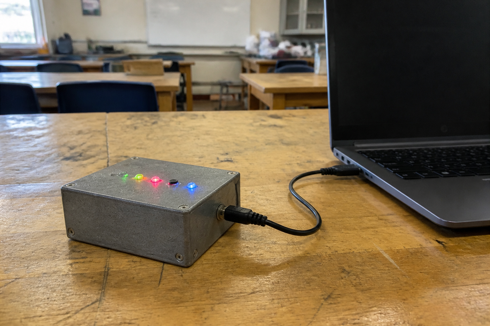

🔌 L'indicateur du hall — de quoi va-t-il vivre ?
🎯 Ta mission : choisir, parmi cinq sources proposées, celle qui fera vivre l'indicateur du hall — et dire sur quel chiffre et sur quelle contrainte tu t'appuies.
🖥️ Ordinateur partagé (salle de techno, CDI — le centre de documentation et d'information) : un autre élève qui ouvre cette page sur la même session verra tes réponses.
Quand tu as fini : imprime en PDF si tu veux garder une trace, puis clique sur « 🗑 Effacer ma sauvegarde ».
📖 Rappel : la situation et ton hypothèse
🎯 Avant de commencer : trois choses à lire
- 📚 Ce que tu vas apprendre
Choisir la source d'énergie d'un objet parmi cinq, et la forme d'énergie qu'elle donne. - 🛠 Ce que tu dois savoir faire
Repérer la source et la forme d'énergie de chaque solution.
Comparer les sources selon l'endroit où l'objet sera placé.
Choisir, et justifier ton choix. - ✅ Comment réussir
Aucune conversion n'est parfaite : une part de l'énergie part en chaleur.
Regarde le lieu : un panneau qui gagne au banc peut ne pas marcher dans le hall.
Après chaque exercice, compare avec la correction.
🎯 Ce que dit le programme
| Code | Formulation officielle (programme 2024) | Où, dans cette séquence |
|---|---|---|
| 5e_C7.4 | Choisir une source d'énergie parmi plusieurs proposées et une forme d'énergie possible. | Activités 0, 2, 3 et REFAIRE |
| 5e_C3.1 (appui) | Repérer pour un OST les matériaux, les sources et les formes d'énergies, le traitement de l'information. | Activités 1 et 4 |
Référence normative : programme de technologie du cycle 4, BO n°9 du 29 février 2024.
Codification opérationnelle : les codes 5e_C3.1 · 5e_C7.4 servent à ranger les séquences ; ils ne viennent pas du programme officiel.
🔄 Avant de commencer : ce que je vérifie
Pour toi, sans note : coche ce qui est déjà en place. Sous chaque ligne, un lien pour le reprendre si tu n'en es pas sûr·e.
-
→ pas encore sûr·e ? relis la partie 1 de la synthèse 5e_C3.1 à C3.4, « Comment décrire un objet technique ? » — c'est la séquence 5e_C3.1 qui la travaille, si tu l'as suivie
-
→ pas encore sûr·e ? relis la partie 2 de la synthèse 5e_C4.1 à C4.8, « Quelles sont les deux chaînes du lampadaire ? » — c'est la séquence 5e_C4.1 qui la travaille, si tu l'as suivie
-
→ pas encore sûr·e ? relis la partie 4 de la synthèse 5e_C3.1 à C3.4, « Choisir » — c'est la séquence 5e_C3.1 qui la travaille, si tu l'as suivie
Dans cette séquence : la chaîne d'énergie de l'indicateur n'existe pas encore, et c'est toi qui décides par quel bout elle commence. Repérer, c'est lire ; choisir, c'est décider.
Un mot à garder en tête : une source d'énergie, c'est le premier maillon de la chaîne, ce qui va devenir de l'électricité.
📖 Situation déclenchante
Ton indicateur de rangement fonctionne parfaitement — sur la table de l'atelier, relié à l'ordinateur par son câble USB. C'est l'ordinateur qui l'alimente.
Le jour de l'installation, tu montes dans le hall avec le boîtier… et il n'y a pas d'ordinateur dans le hall. Il n'y en aura jamais.
« Bon, dit le professeur. De quoi va-t-il vivre ? »

Image générée par IA (Canva).
❓ Problématique
Le même objet peut être alimenté de plusieurs façons. Laquelle choisir, et sur quoi s'appuyer pour le dire ?
💡 Ton idée à toi, avant tout essai
Cinq sources te sont proposées : une pile 9 V (volts), quatre piles AA, un accu rechargeable,
une prise de courant avec son adaptateur, un petit panneau solaire.
Laquelle
choisirais-tu, là, tout de suite ? Et qu'est-ce qui te ferait changer d'avis ?
On la reprendra au bilan. Personne ne la corrige : elle sert à mesurer le chemin parcouru.
⚠️ Sécurité — à lire avant de brancher quoi que ce soit
- Tout le montage fonctionne en très basse tension : 5 V (volts). C'est la tension d'un port USB, et elle est sans danger.
- Le « secteur » de la liste, c'est l'adaptateur USB fermé, jamais la prise
elle-même.
On ne l'ouvre pas, on ne le modifie pas, on ne coupe pas son câble.
Côté élève, il n'y a que du 5 V. - Une pile ou un accu ne se met jamais en court-circuit, ne se perce pas, ne se chauffe
pas.
Un accu qui gonfle ou qui chauffe se pose au sol, loin de tout, et on prévient. - Piles et accus usagés vont au bac de collecte, jamais à la poubelle.
🔀 Trois façons de vivre la séquence
- 🅰 Avec le matériel — le montage réel sur la paillasse, alimenté tour à tour par
chaque source, et un multimètre en série pour lire le courant.
Les valeurs mesurées remplacent alors celles du banc : ce sont elles qui font foi. - 🅱 Avec le banc de cette page — il fonctionne hors ligne, sans rien installer.
C'est la voie par défaut, et la seule qui permette d'éteindre un consommateur pour voir ce qu'il pesait. - 🅲 Sans écran — les tableaux s'impriment et toutes les valeurs figurent dans les corrections. Le travail reste le même : lire, comparer, décider, justifier.
🎫 Billet d'entrée — trois questions, sans note
Une question par ligne du bloc « Avant de commencer ».
Elles ne sont pas notées et ne comptent pas dans ta progression : elles te disent quoi relire avant de te lancer.
« Je ne sais pas encore » est une réponse utile.
✅ Correction complète du billet — ouvre-la après avoir vérifié
- D'où une calculatrice munie d'un petit panneau solaire tire-t-elle son énergie ?
✅ de la lumière qui l'éclaire
✘ « de la chaleur de la main » : Le petit panneau ne se réchauffe pas au contact de la main : il réagit à ce qui l'éclaire.
✘ « du bruit de la classe » : Le bruit n'alimente pas la calculatrice. Cache le panneau avec ton doigt : que se passe-t-il ? - Dans le lampadaire solaire, quelle énergie le bloc de DEL transforme-t-il, et en quoi ?
✅ électrique en énergie lumineuse
✘ « lumineuse en énergie électrique » : C'est le travail du panneau solaire. Les DEL, elles, produisent de la lumière.
✘ « chimique en énergie électrique » : C'est le travail de la batterie quand elle se décharge. Les DEL produisent de la lumière. - Avant de comparer plusieurs objets pour en choisir un, qu'écrit-on ?
✅ le cahier des charges : des exigences vérifiables
✘ « la liste des prix, du moins cher au plus cher » : Le prix n'est qu'une exigence parmi d'autres. Avant de comparer, on écrit tout ce que l'objet doit respecter.
✘ « son choix, puis les raisons qui le justifient » : Choisir d'abord, puis chercher des raisons, c'est justifier après coup. Les exigences s'écrivent AVANT de comparer.
- ○ Vérifier l'activité 0
- ○ Vérifier l'activité 1
- ○ Vérifier l'activité 2
- ○ Vérifier l'activité 3
- ○ Vérifier l'activité 4
- ○ Vérifier le réinvestissement
🧭 Séance 1 — Brancher, puis nommer
Question directrice : que donne chacune des cinq sources à l'indicateur, et sous quelle forme l'énergie y entre-t-elle ?
Au programme :
① brancher les cinq sources au banc (activité 0, environ 15 min) ;
② la chaîne d'énergie : la forme d'énergie de chaque source (activité 1, environ 20 min).
Avec l'ouverture, la séance tient dans 55 min.
| Ce qui consomme | Courant (en milliampères) | Par jour | Énergie | |
|---|---|---|---|---|
| Carte Arduino UNO | 45 mA | 10 h | 2,250 Wh (wattheures) | |
| Capteur de présence du sac | 0,5 mA | 10 h | 0,025 Wh | |
| DEL indicatrice | 10 mA | 10 h | 0,500 Wh | |
| Consommation du montage, par jour | — | |||
| Énergie stockée dans la source | — |
|---|---|
| Rendement de la mise en 5 V (volts) | — |
| Énergie réellement disponible | — |
—
🔎 D'où viennent les chiffres du banc
Courants moyens sous 5 V, valeurs constructeur usuelles.
Le rendement d'un régulateur linéaire vaut Vsortie ÷ Ventrée — ce n'est pas un réglage, c'est de la physique : il dissipe la différence en chaleur.
Ensoleillement retenu pour la Martinique : 5,3 heures équivalent plein soleil par jour, avec 30 % de pertes de chaîne.
🖐️ Activité 0 — FAIRE d'abord : brancher les cinq sources ⏱ ~15 min
Avant toute explication.
Le banc, juste au-dessus, compte ce que ton indicateur consomme,
puis regarde ce que la source peut donner.
Passe les cinq sources en revue et observe
ce que devient la ligne du bas.
Après avoir essayé les cinq
🔒 Sélectionne d'abord les cinq sources dans la liste du banc — c'est l'essai qui fait foi.
📖 Correction
1 — environ une journée.
24 heures, exactement.
Une pile 9 V paraît sérieuse, parce qu'elle est grosse et qu'elle affiche un gros nombre.
Elle ne contient pourtant que 4,95 Wh (wattheures).
Et le régulateur qui ramène ses 9 V à 5 V en jette près de la moitié en chaleur, avant que l'indicateur n'en voie la couleur.
2 — le secteur et le panneau solaire.
Ce ne sont pas des réservoirs,
ce sont des robinets : ils ne stockent rien, ils donnent.
Le secteur donne tant
qu'il y a du réseau ; le panneau donne une certaine quantité chaque jour.
C'est une différence de nature, et elle change complètement la façon de décider.
🔁 Activité 1 — D'où vient l'énergie, et sous quelle forme ⏱ ~20 min
🗂 La fiche de l'activité : objectif, compétence, production attendue
Objectif : nommer la forme d'énergie au départ de chaque source. Compétence : 5e_C3.1. Production attendue : 5 associations + 1 réponse, puis la dynamo.
Une source d'énergie n'est pas de l'électricité : c'est ce qui va devenir de l'électricité.
Dans la chaîne de l'indicateur :
① pose sous chaque pile, et sous l'accu, l'énergie qu'il garde en réserve ;
② pose sur la flèche du secteur et sur celle du soleil l'énergie qui arrive ;
③ à droite, pose ce que la DEL en fait.
Une sixième source, qu'on ne branche pas : une dynamo, la petite génératrice d'une lampe à manivelle.
On tourne la manivelle : la dynamo fait du courant pour la DEL.
📖 Correction
Pile 9 V alcaline — énergie chimique : une réaction dans la pile.
4 piles AA alcalines — énergie chimique aussi : quatre fois la même réaction.
Accu Li-ion 18650 rechargeable — énergie chimique, mais on peut la remettre : on recharge l'accu.
Secteur — adaptateur USB scellé — énergie électrique : elle arrive déjà sous cette forme.
Panneau solaire 1 W crête + accu — énergie lumineuse : le rayonnement du soleil, de la lumière, pas du courant.
Les étiquettes qui ne vont nulle part : énergie cinétique (rien ne tourne ni ne bouge dans l'indicateur) et énergie thermique (la DEL chauffe un peu, mais c'est une perte, pas ce qu'on attend d'elle).
À l'arrivée : lumineuse, et un peu de chaleur — aucune conversion n'est parfaite. La chaîne complète s'écrit donc, par exemple : chimique → électrique → lumineuse. Le mot « source » désigne le premier maillon, pas l'électricité qui circule au milieu.
La dynamo de la lampe à manivelle — il y entre de l'énergie cinétique : le mouvement de la manivelle.
Elle en fait de l'énergie électrique pour la DEL.
C'est une génératrice : mécanique → électrique. On dit aussi « mécanique » : c'est le mot qui couvre le mouvement (cinétique) et la hauteur (potentielle).
📌 Deux sources de la liste contiennent la même forme d'énergie au départ : la pile et l'accu. Ce qui les distingue n'est pas la forme, c'est qu'on peut remettre l'énergie dans l'accu, et pas dans la pile.
🧭 Séance 2 — Relever, choisir, refaire
Question directrice : quelle source choisir pour le hall, chiffre à l'appui, et qu'est-ce que le banc ne compte pas ?
Au programme :
① relever ce que chaque source donne vraiment (activité 2, environ 20 min) ;
② choisir et le dire (activité 3, environ 20 min) ;
③ ce que le banc ne compte pas (activité 4, environ 10 min) ;
④ le réinvestissement (environ 10 min).
Puis la synthèse, le Bonus, le bilan et le QCM (questionnaire à choix multiples).
Avec le matériel (🅰), on ne branche que la très basse tension de l'adaptateur fermé : l'encadré Sécurité est dans le rappel, en haut de page.
📋 Activité 2 — Relever ce que chaque source donne vraiment ⏱ ~20 min
🗂 La fiche de l'activité : objectif, compétence, production attendue
Objectif : lire au banc, et écrire ce qu'on a lu. Compétence : 5e_C7.4. Production attendue : 5 relevés.
Remonte au banc.
Attention : pour le panneau, ce n'est pas la même chose —
c'est une énergie par jour.
Pour chaque source, relève ce que la ligne « Énergie réellement disponible » affiche.
| Source | Ce que le banc affiche |
|---|---|
| Pile 9 V (volts) alcaline | |
| 4 piles AA alcalines | |
| Accu Li-ion 18650 rechargeable | |
| Secteur — adaptateur USB scellé | |
| Panneau solaire 1 W (watts) crête + accu |
🔒 Passe les cinq sources au banc : on ne recopie pas un relevé qu'on n'a pas fait.
📖 Correction
| Source | Énergie disponible |
|---|---|
| Pile 9 V (volts) alcaline | 2,8 Wh (wattheures) |
| 4 piles AA alcalines | 12,5 Wh |
| Accu Li-ion 18650 rechargeable | 9,4 Wh |
| Secteur — adaptateur USB scellé | illimitée |
| Panneau solaire 1 W (watts) crête + accu | 3,7 Wh par jour |
Le piège de la pile 9 V. Elle stocke 4,95 Wh (wattheures) et n'en
délivre que 2,8.
La différence part en chaleur dans le régulateur, qui doit faire tomber
9 V à 5 V : il jette 4 V sur 9, soit 44 %.
Les quatre piles AA font 6 V, le
régulateur n'a plus qu'un volt à jeter sur six : il n'en perd que 17 %.
📌 Une source ne vaut pas ce qu'elle contient : elle vaut ce qui arrive au bout. C'est la première chose que ce banc apprend.
⚖️ Activité 3 — Choisir, et le dire ⏱ ~20 min
🗂 La fiche de l'activité : objectif, compétence, production attendue
Objectif : transformer cinq relevés en une décision. Compétence : 5e_C7.4. Production attendue : 3 réponses + une justification.
Ce que le professeur ajoute
- L'indicateur doit fonctionner tous les jours d'ouverture du collège, de 7 h 30 à 17 h 30.
- Le hall a une prise de courant, à trois mètres du mur choisi.
- Personne ne veut changer une pile chaque matin.
Ta justification, en deux phrases. Nomme la source, cite un chiffre relevé, et dis ce qui a éliminé les autres.
🪜 Version étayée — des phrases à compléter
Le niveau attendu est le même : ces phrases donnent le départ, pas la réponse.
- « Je choisis … (la source), parce que le banc affiche … (un chiffre relevé). »
- « Les piles sont écartées parce qu'il faudrait les changer … (combien de fois). »
- « Le panneau solaire est écarté parce que dans le hall, il n'y a pas de … »
📖 Correction
1 — pas de soleil dans un hall.
Le calcul est juste et le résultat ne sert à
rien : le banc compte l'ensoleillement de la Martinique dehors.
Sous un néon, un
panneau récolte quelques pour cent de cela.
Un nombre exact peut répondre à une
question qu'on ne s'est pas posée — c'est l'erreur la plus fréquente en technologie,
et tu la retrouveras en 3e.
2 — tous les quatre jours.
Les quatre piles AA tiennent 4,5 jours, c'est la
meilleure des trois.
Quatre piles neuves par semaine, trente-six semaines : cent
quarante-quatre piles à l'année pour un voyant.
La contrainte « personne ne veut changer
une pile chaque matin » les élimine — et le sac de piles usagées aussi.
3 — le secteur. Le hall a une prise, l'objet ne bouge pas, il doit marcher tous les jours : c'est exactement la situation où une source illimitée est la bonne. Et l'adaptateur USB fermé garde l'élève en très basse tension.
📌 On ne choisit pas une source pour un objet : on la choisit pour un objet DANS UN LIEU. Change le lieu, la réponse change — tu vas le voir tout de suite.
🕳️ Activité 4 — Ce que le banc ne compte pas ⏱ ~10 min
🗂 La fiche de l'activité : objectif, compétence, production attendue
Objectif : savoir ce qu'une mesure ne mesure pas. Compétence : 5e_C3.1. Production attendue : 4 associations.
Le banc ne connaît que des watts-heures.
Associe chaque source à ce que le banc ignore d'elle.
Les réponses possibles — choisis une lettre pour chaque ligne ; une réponse ne sert à aucune ligne :
- AIl faut quelqu'un pour le recharger, et un chargeur qui ne se perde pas.
- BIl faut une prise à portée — et le hall en a une, la cour non.
- CIl lui faut du soleil, donc un dehors, une orientation et un nettoyage.
- DIl faut le refroidir : il chauffe trop pour rester dans un boîtier fermé.
- ELe déchet : une pile par jour, c'est un bac de collecte plein à Noël.
📖 Correction
Pile 9 V alcaline — Le déchet : une pile par jour, c'est un bac de collecte plein à Noël.
Accu Li-ion 18650 rechargeable — Il faut quelqu'un pour le recharger, et un chargeur qui ne se perde pas.
Secteur — adaptateur USB scellé — Il faut une prise à portée — et le hall en a une, la cour non.
Panneau solaire 1 W crête + accu — Il lui faut du soleil, donc un dehors, une orientation et un nettoyage.
La réponse en trop : « Il faut le refroidir : il chauffe trop pour rester dans un boîtier fermé. »
Aucune des quatre sources ne chauffe autant : l'indicateur ne consomme que 2,78 Wh (wattheures) par jour.
📌 À retenir : le banc répond à une seule question — combien de temps ça tient. Le prix, le déchet, la sécurité et le lieu ne sont pas dedans, et ce sont pourtant eux qui ont tranché.
🔄 REFAIRE — Réinvestissement ⏱ ~10 min
Le collège veut le même indicateur sur le portail de l'abri à vélos, dans
la cour.
Même boîtier, même DEL, même consommation — mais il n'y a pas de prise
là-bas, et il y a du soleil toute la journée.
Quelle source choisis-tu maintenant, et pourquoi la réponse a-t-elle changé alors que l'objet, lui, n'a pas bougé ?
🪜 Version étayée — des phrases à compléter
Le niveau attendu est le même : ces phrases donnent le départ, pas la réponse.
- « Pour l'abri à vélos, je choisis … parce qu'il n'y a pas de … et qu'il y a du … »
- « L'objet n'a pas bougé : même boîtier, même DEL, même consommation. »
- « La réponse a changé parce que c'est … (le lieu / ses contraintes) qui décide, pas seulement le chiffre du banc. »
📖 Correction
Le panneau solaire. Il récolte 3,7 Wh (wattheures) par jour pour 2,78 consommés — les mêmes chiffres qu'à l'activité 3, exactement les mêmes — et cette fois il y a du soleil.
Rien n'a changé dans l'objet.
Tout a changé dans la situation.
C'est pour cela que
la compétence dit « choisir une source d'énergie » et pas « connaître la meilleure source » :
il n'y a pas de meilleure source, il y a une source adaptée à un besoin, dans un lieu, avec
des contraintes.
Une précision honnête : dehors, le panneau doit être orienté et propre, et il faut un petit accu pour passer la nuit — le banc compte une moyenne sur la journée, pas un instant. Tu apprendras à dimensionner cela en 3e.
📝 Synthèse — à retenir
- Source d'énergie — le premier maillon de la chaîne : ce qui va devenir de l'électricité. La pile, l'accu, le réseau, le soleil.
- Forme d'énergie — chimique dans une pile, rayonnement pour le soleil, électrique dans les fils, lumineuse au bout de la DEL. Une chaîne s'écrit avec des flèches.
- Réservoir ou robinet — une pile stocke une quantité et s'épuise ; le secteur et
le panneau ne stockent rien et donnent.
On ne les compare pas de la même façon. - Énergie utile — ce qui arrive vraiment au bout. Une pile 9 V (volts) stocke 4,95 Wh et n'en délivre que 2,8 : le régulateur jette le reste en chaleur.
- Watt-heure (Wh) — l'unité de l'énergie stockée. Un courant seul ne dit rien : il faut aussi une tension et une durée.
- Autonomie — l'énergie utile divisée par la consommation d'une journée.
- Le lieu décide — le même objet ne prend pas la même source dans un hall et sur un portail. On choisit pour un besoin dans une situation.
🎁 Bonus (facultatif — hors parcours obligatoire)
🎁 Les 3 défis du Bonus — ouvre-les quand tu as fini
🔋 Défi pile : une pile 9 V (volts) coûte 3,50 € et tient 24 h.
Combien coûterait une année
scolaire d'indicateur alimenté ainsi ? Compare au prix de l'adaptateur, une fois pour toutes.
☀ Défi Martinique : le banc compte 5,3 heures d'équivalent plein soleil par jour, en
moyenne annuelle.
Cherche ce que devient ce chiffre en saison des pluies, et dis ce que ça
change pour le panneau du portail.
🔦 Défi dynamo : une sixième source existe et n'était pas dans la liste : la dynamo,
qui transforme un mouvement en électricité.
Où faudrait-il installer l'indicateur pour qu'elle
soit un bon choix ?
🪜 Version étayée — des phrases à compléter
Le niveau attendu est le même : ces phrases donnent le départ, pas la réponse.
- « Le défi que j'ai choisi : … (la saison des pluies / la dynamo). »
- « Ce que j'ai trouvé : … »
- « Ce que ça change pour l'indicateur : … »
✅ Corrigé du défi pile
Environ 630 € pour une année scolaire.
La pile tient 24 h, une journée d'indicateur : il en faut une par jour
d'ouverture.
Une année scolaire compte 36 semaines ; à 5 jours d'ouverture par semaine, du lundi au vendredi, cela fait
180 jours, donc 180 piles × 3,50 € = 630 €.
L'adaptateur, lui, s'achète une fois : quelques euros à une quinzaine d'euros selon le modèle — regarde le prix de celui du collège. L'électricité qu'il fait passer pèse presque rien : 2,78 Wh (wattheures) par jour, soit environ 500 Wh sur l'année, quelques centimes.
Attendus : le nombre de jours (180, ou 36 semaines × 5 jours) ;
le calcul 180 × 3,50 ;
la comparaison avec un
achat unique ;
et le déchet : 180 piles au bac de collecte.
Erreurs typiques : compter une seule pile pour l'année ;
comparer le prix d'une pile à celui de l'adaptateur sans
multiplier par le nombre de jours ;
compter 365 jours, alors que l'indicateur ne sert que les jours d'ouverture.
✅ Corrigé du défi Martinique
Le chiffre se cherche, il ne s'invente pas : dans un relevé d'ensoleillement de la Martinique, mois par mois, on lit les heures d'équivalent plein soleil de la saison des pluies, l'hivernage. Note la source et le mois.
Ce qu'on peut calculer sans lui.
La récolte du panneau suit les heures d'équivalent plein soleil : à 5,3 heures,
il récolte 3,7 Wh (wattheures) par jour, et l'indicateur en consomme 2,78.
Le panneau suffit donc tant qu'il reste au
moins 5,3 × 2,78 ÷ 3,7 ≈ 4 heures d'équivalent plein soleil par jour.
En dessous, il manque de l'énergie chaque
jour, et l'accu se vide.
Ce que ça change pour le portail : le banc compte une moyenne sur l'année, et une semaine de pluie fait des
journées bien plus sombres que la moyenne.
Le panneau qui suffit avec un tiers de marge peut ne plus suffire en
hivernage : il faut alors un panneau plus grand, ou un accu qui tient plusieurs jours sans soleil.
Attendus : une valeur trouvée, avec sa source ;
la comparaison avec le seuil d'environ 4 heures ;
une
conséquence pour le portail (la marge, l'accu, le panneau).
Erreurs typiques : confondre les heures de jour (environ 12 h aux Antilles, toute l'année) et les heures
d'équivalent plein soleil ;
croire qu'une moyenne sur l'année vaut pour chaque jour ;
oublier la nuit, pendant laquelle
l'accu seul alimente l'indicateur.
✅ Corrigé du défi dynamo
Là où quelque chose bouge, au moment où l'indicateur doit marcher. Une dynamo transforme une énergie cinétique (un mouvement) en énergie électrique : la chaîne devient cinétique → électrique → lumineuse.
Pour une dynamo, on écrit souvent « mécanique → électrique » : c'est juste aussi. « Mécanique » couvre le mouvement (cinétique) et la hauteur (potentielle).
Exemples qui conviennent : sur un vélo — c'est l'éclairage à dynamo : la roue tourne quand on roule, justement
quand il faut de la lumière ;
sur un tourniquet ou un portillon qu'on pousse à chaque passage ;
sur une lampe à manivelle
qu'on tourne avant de s'en servir.
Pourquoi pas dans le hall : l'indicateur doit dire « libre » ou « occupé » toute la journée, même quand rien ne bouge. Une dynamo ne donne rien à l'arrêt : il faudrait un accu pour garder l'énergie entre deux mouvements.
Attendus : la forme d'énergie au départ (cinétique) ;
un lieu où le mouvement existe au moment du besoin ;
la
limite : rien quand rien ne bouge.
Erreurs typiques : « dans le hall, parce qu'il y a du passage » — marcher devant un objet ne fait pas tourner sa
dynamo ;
« la dynamo fabrique de l'énergie » — elle la transforme ;
confondre la dynamo et la pile, qui stocke une
énergie chimique.
🙋 Mon bilan personnel
🔙 Ton idée de départ : —
Tu avais choisi une source avant tout essai. Est-ce la même ? Et surtout : est-ce que ce qui t'a fait changer d'avis était un chiffre, ou une contrainte du lieu ?
🪜 Version étayée — des phrases à compléter
Le niveau attendu est le même : ces phrases donnent le départ, pas la réponse.
- « Au départ, j'avais choisi … . »
- « Maintenant je choisis …, et ce qui m'a fait changer d'avis, c'est … (un chiffre / une contrainte du lieu). »
- « Ce qui me résiste encore : … »
Je me positionne sur 5e_C7.4 :
🧠 Prêt·e à t'entraîner ?
30 questions — chaque mauvaise réponse est réfutée une par une — sur les sources, les formes d'énergie, le watt-heure, l'autonomie et ce qu'un banc ne compte pas.
🚀 Ouvrir le QCM d'entraînement